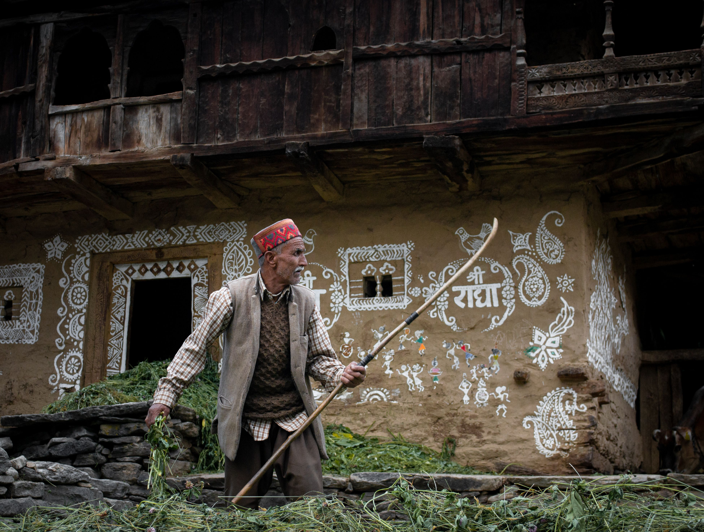

Come for the views. Stay for the feeling.
Wake up to mountain views, local food and warm smiles. Stay with local families, walk through the village at an unhurried pace, and discover the small everyday moments that make a place feel like home. Your days can be full of walks, or wonderfully slow.


What you’ll experience
- A warm welcome from people who know the place by heart
- Slow village walks and time to explore at your own pace
- Home-cooked local food and stories shared over tea